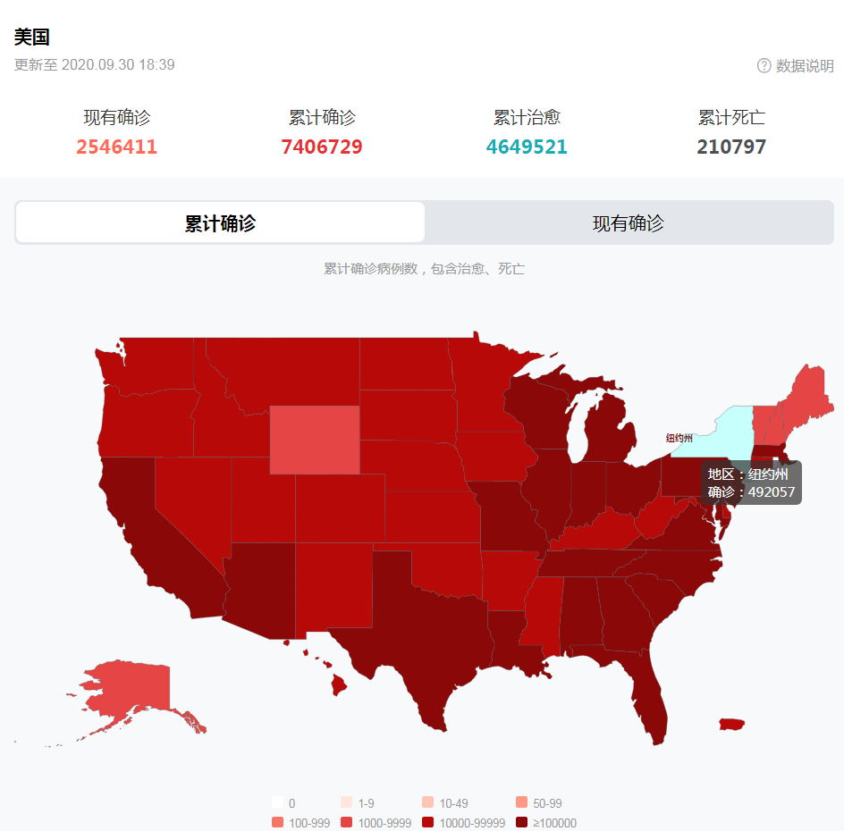

这就是我们平凡而伟大的祖国 - 知乎
星期四, 十二月 14, 2023
12:03 下午
已剪辑自: https://zhuanlan.zhihu.com/p/260797220
一、善战者
1953年7月27日，北纬三十八度线以南，板门店。
这一天，一直在谈判桌上反复无常、胡搅蛮缠，先是以“海空优势”为理由要求中朝军队自交火线无条件后撤数十公里，后是轰炸中朝代表团住所导致谈判中断63天的美国人，终于在《朝鲜停战协议》上签了字。
在协议上签字的，除了代表“联合国军”的美军小威廉·凯利·哈里森中将和马克·克拉克上将，还有朝鲜人民军南日大将、朝鲜人民军最高司令官金日成，以及中国人民志愿军司令员彭德怀，但并没有任何一位来自“大韩民国”的代表。
为了这份和平协议的签订，有十九万余名中华儿女，倒在了异域他乡的土地上。
相比于美国朝鲜战争纪念碑上，DEAD这个单词下雕刻的那个数字，十九万这个数字即使并不算特别夸张，但也足够让人感到十分心痛了。
很多人说，这些牺牲是无谓的，没有什么理由应该让这些中华儿女牺牲在国境线以外的地方。
真的是这样吗？
还有人记得，中国人上一次签订类似的协议，是在什么地方吗？
是在1945年9月9日，在作为中国腹地的南京，作为“受降代表”的何应钦甚至还向着双手沾满中国人民鲜血的侵华日军总司令冈村宁次弯下了腰。
是啊，在中国腹地面对强敌持续抗争了8年，打了22次“大规模会战”，听起来是多么壮烈啊。可是，代价呢？
对于成百上千万倒在路边的壮丁，遍布中华大地万人坑里的累累尸骨，十四年抗战中伤亡的三千五百万军民，大概不会希望这些“壮烈的事迹”，发生在国家腹地吧？
如果那个时候，我们接受敌人投降的所在，就像板门店一样，位于远离国境线几百公里的地方，那该有多好？
打得一拳开，免得百拳来，不让战火在新中国的土地上燃烧，这，就是抗美援朝这场伟大斗争的最大意义。
在这场伟大斗争之后的七十年间，中国人民都没有再在自己生活的家园里，闻到过战争的硝烟味，见识过战火摧毁一切的惨烈场景，而这，在之前的几十年里原本是中国人民生活中的常态。
即使是在美苏争霸最巅峰的那些年月里，霸权主义国家也对人民共和国保卫自己的能力和决心保持了足够的敬畏。
即使是在冷战结束后，超级大国最肆无忌惮的那些时间中，那些让我们忍不住握紧双拳的屈辱事件，也没有一件发生在人民共和国的边境线内。
七十年前我们选择战争，正是为了在接下来的时间里远离战争。将侵略者的野心扼杀在萌芽状态，让所有怀有狼子野心者都对正义的力量抱有敬畏，这，正是反对战争的最好办法。
二、善医者
根据美国约翰斯·霍普金斯大学实时数据，截至北京时间9月23日5时23分（美东时间9月22日17时23分），美国新冠肺炎累计确诊病例6885499例，累计死亡病例200541例。
二十万，这是一个有些骇人听闻的数字。中国外交部发言人华春莹对此的评价是，“200000，这不是冷酷的统计数字，而是真实的生命。没有生存权，人权只能是幻想和胡说八道。”
而在大洋的彼岸，在疫情一度严峻的武汉，生活早已恢复常态，数千名当地群众参加水上音乐节的报道还曾一度作为大新闻登上西方媒体，所有人都感叹于这座城市回归正轨的速度。
2020年2月，西方世界一部分人还在幸灾乐祸，认为新冠疫情是“新世纪的切尔诺贝利”，想要看到看不见摸不着的病毒击垮这个令他们咬牙切齿的国度，但一转眼间，中国在全球疫情“排行榜”中的名次就掉出了几十名以外，已经远得快找不到了。
其实，作为国力强盛的超级大国，美国曾经有机会像中国这样，扼杀住疫情扩散的。
如果不是他们抱着意识形态的偏见，将能够有效阻止疫情扩散的“停工”、“封城”指斥为“侵犯人权”。
如果不是他们心中各怀鬼胎，在拥有全世界最先进医疗技术和最庞大医疗队伍的情况下，没有“应收尽收、应治尽治”，反而将疫情视为上到“皇亲国戚”、下到医疗产业大发横财的机会。
如果不是他们没有将疫情当成最大的敌人、把保护自己人民的生命作为唯一目的，以疫情作为政治斗争、党派倾轧甚至左右总统选举的工具和“契机”。
曾经，为了疫情，中国不惜一切代价踩下了社会运行的“刹车”，而无论这一脚急刹车会在经济上造成多大的后果。因为“世间一切事物中，人是第一个可宝贵的。”
**而事实也正证明了，“存人失地，人地皆存”。**疫情控制住了，生活恢复了常态，经济自然而然也就找到了增长的出口。2020年第二季度，中国GDP增长3.2%，在全球主要经济体中率先恢复正增长，可谓一枝独秀。而在对外贸易方面，出口复苏势头越发明显，海关总署公布的数据显示，8月中国出口额同比增长11.6%，不仅刷新了疫情暴发至今的纪录，更创下了去年3月以来的新高。
在新冠肺炎死亡人数不断增加的同时，在另外一项“光彩”得多的数据上，美国人也攀上了新的高峰。截止2020年9月30日，美国新冠肺炎治愈病例已经突破了465万，高居世界首位。
只是，美国人民到底想不想要这个“第一”呢？

三、人类不感谢罗辑
《银河系漫游指南》的作者，知名英国科幻作家道格拉斯·亚当斯曾经提出过这样一个非常有趣的“科技三定律”：
其一，任何在我出生时已经有的科技都是稀松平常的世界本来秩序的一部分；
其二，任何在我15-35岁之间诞生的科技都是将会改变世界的革命性产物；
其三，任何在我35岁之后诞生的科技都是违反自然规律的。
道格拉斯·亚当斯的著作为全世界科幻爱好者留下了许多诸如“42”这样的名梗
某种程度上，这个“三定律”很好地概括了我们之中相当一部分人看待世界的眼光。我们往往不会注意到那些对我们来说已经成为日常一部分的事物，即使它在其他人眼里可能有着非凡的价值和意味。
其实，像这样的事情，还有很多，很多。
2019年10月14日，瑞典皇家科学院揭晓了2019年诺贝尔经济学奖获得者。诺贝尔经济学奖评委会将这一奖项分别授予了三名美国经济学家，其中阿比吉特·巴纳吉和埃丝特·迪弗洛来自美国麻省理工学院，迈克尔·克雷默来自哈佛大学，以表彰其“利用实验性方法在全球脱贫”方面所做的贡献。
而在这之前，2006年10月13日，挪威诺贝尔委员会宣布，将2006年度诺贝尔和平奖授予孟加拉国农村银行以及该银行创始人穆罕默德·尤努斯，以表彰他们“从基层推动经济和社会发展，通过农村银行向社会最底层的穷人提供小额银行贷款，使那些在通常金融制度下无法得到信贷的人有了发展的起步资本。”
但在中国，扶贫，只是国家最基础的责任之一。71年来，在中国从一穷二白、“人民温饱都成问题”到成为世界第二大经济体的变迁过程中，7亿多农村贫困人口成功脱贫，贫困发生率急剧下降。
当然，这本就是理所应当的，因为这个国家的执政党名字叫做中国共产党，因为**“到2020年现行标准下的农村贫困人口全部脱贫，是党中央向全国人民作出的郑重承诺，必须如期实现，没有任何退路和弹性。”**
2018年，一部中文译名叫做《印度合伙人》的印度电影上映，这部根据印度草根企业家真实事迹改编，讲述主人公冲破阻力，发明低成本卫生巾制造机械，为印度妇女谋福利的故事，一时间赚取了不少人的眼泪，中文互联网上甚至不乏有人以此为契机，从卫生巾入手指责国内忽视妇女权益。
但他们不知道，或者不知不觉间忽略掉了的一件事是，作为维护妇女权益的重要指标，中国妇女的劳动参与率和受教育程度在国际上都可谓是一骑绝尘，其中女性劳动参与率超过70%，25到55岁的中国女性参与率甚至高达90%，远超印度女性的23.3%、全球女性的48.5%甚至发达国家的52.6%。要知道，经济独立，才是最根本的女性独立。
说一千道一万，新中国女性在结婚之后，是不需要冠夫姓的。
在刘慈欣的科幻小说《三体》中，有一句非常有趣的话，叫“人类不感谢罗辑。”
在故事里，罗辑作为掌握最终威慑手段，与三体人斗智斗勇保卫了人类社会数十年的“执剑人”，并未获得全体人类一丝一毫的感激。在他卸任“执剑人”后，人类迅速选出了种种特质与他完全相反的程心，作为新的“执剑人”。
是因为他不重视自己的外表，太不修边幅？因为他太过严肃，太过不近人情？
或许吧，但更根本的原因是，和我们这些开了上帝视角的读者不一样，故事里的人类，并不清楚地知道，他们和三体人之间脆弱的和平，并不是与生俱来的。
因为罗辑威慑了三体人，所以人类和三体人之间保持了长久的和平，但这种长久的和平，却让人类产生了错觉，认为人类和三体人之间的和平是天然的，而并不是因为罗辑的威慑。就像道格拉斯·亚当斯在他的“科技三定律”里表达的那样，“任何在我出生时已经有的科技都是稀松平常的世界本来秩序的一部分。”
所以，“人类不感谢罗辑。”
善战者无赫赫之功，因为他已经把战争的萌芽消灭在了所有人都没有注意到的角落，于是人们误以为他徒劳无功，和平是天生的，是自然而然的，他才是和平的破坏者。
善医者无煌煌之名，因为他通过“治未病”，把病魔扼杀在了刚刚开始肆虐的时候，于是人们误以为病魔没有那么可怕，完全可以不用吞下苦涩的药汤，他不过是乱开药方的庸医。
我们中的大部分人，今天都过着平凡的生活。但亿万人民能够过上平凡的日常生活背后，其实隐藏着的，是另一种伟大。
我们平凡而伟大的祖国，你，看到了吗？
——————————
本文作者：团中央知乎团队 大公无司
...